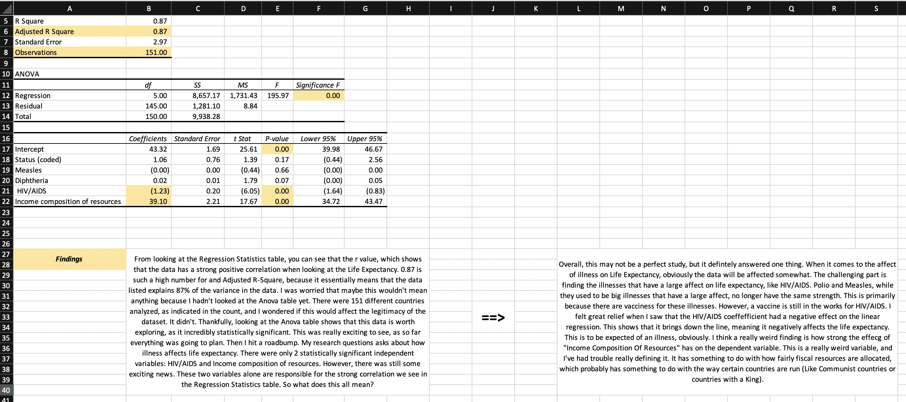
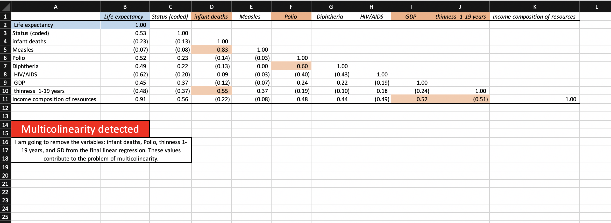
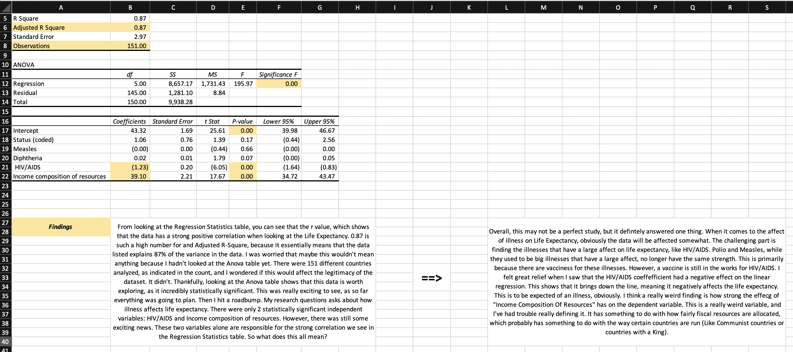
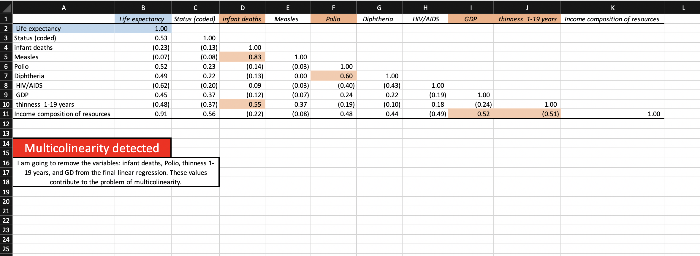

Life Expectancy Linear Regression
Aggregating Real Data
The data used in this project was collected by WHO, or the World Health Organization. It is pretty similar to the data we used in class, where the dependent variable is life expectancy and the independent variables are a range of different factors. The data in this project attempts to find the linear regression of life expectancy, where all of the factors are seperated by different countries. In this particular study, WHO aimed to find how disease and illness effected lifestyle, in conjunction to eating habits, drug use, and fiscal properties of the country. For my project, I was interested in seeing which illnesses had a large effect on the life expectancy, and how much of an effect they actully did have. 151 countries were analyzed in this dataset, and 9 different independent variables were compared to the single dependent variable. Only one of these variables had to be coded, which was "Status", or an indicator of whether a country was "developed" or "developing". There were other strange variables as well. Some things were counted "per 1000", such as "Infant Deaths per 1000 population", "(Measles) number of reported cases per 1000 population", and "Deaths per 1 000 live births HIV/AIDS". Other variables were counted in percentage, like "Polio (Pol3) immunization coverage among 1-year-olds (%), "Diphtheria tetanus toxoid and pertussis (DTP3) immunization coverage among 1-year-olds (%)" and "Prevalence of thinness among children and adolescents for Age 10 to 19 (% )". GDP was calculated per capita. The most confusing variable of all was "Human Development Index in terms of income composition of resources (index ranging from 0 to 1)". This number wasn't clearly defined, but we will get to that later.
Pictures
 



Quantum Computing Podcast
Qubits and More
This Podcast, featuring Jon Ward, Vice President of Marketing at Sidecar Health and Kevin O'Reilly, Vice President of Marketing Sciences at TWO NIL, explores the possibility of AI and it's uses in the corporate world.